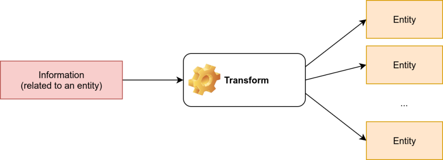
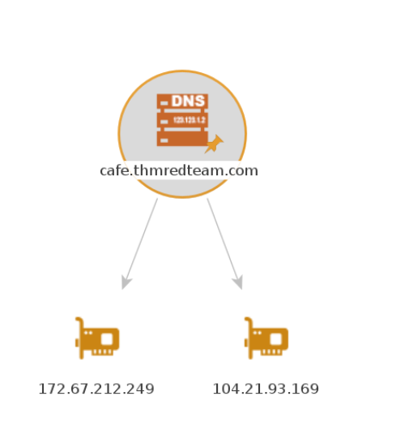
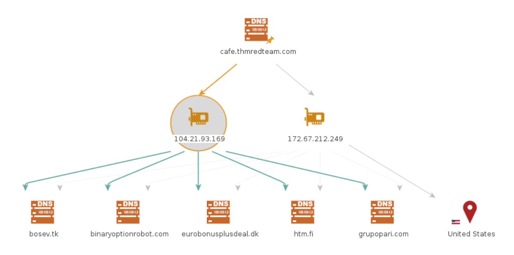
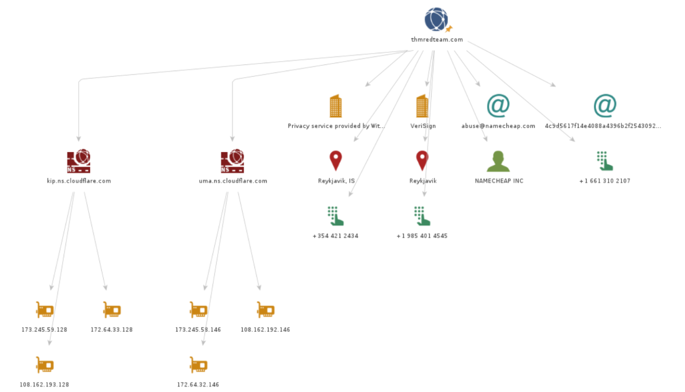
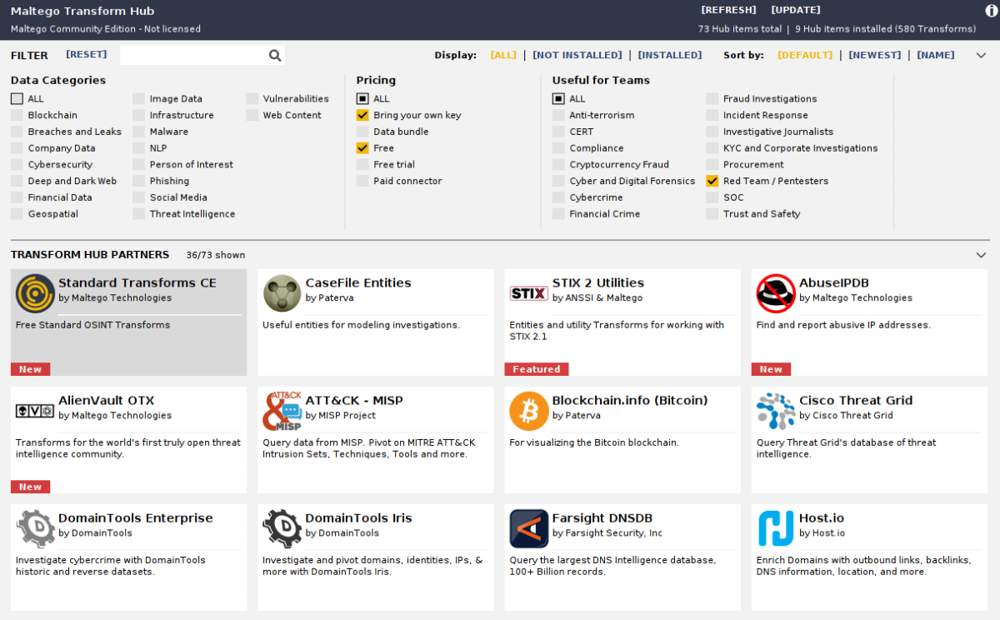

Maltego
Maltego is an application that blends mind-mapping with OSINT. In general, you would start with a domain name, company name, person’s name, email address, etc. Then you can let this piece of information go through various transforms.
The information collected in Maltego can be used for later stages. For instance, company information, contact names, and email addresses collected can be used to create very legitimate-looking phishing emails.
Think of each block on a Maltego graph as an entity. An entity can have values to describe it. In Maltego’s terminology, a transform is a piece of code that would query an API to retrieve information related to a specific entity. The logic is shown in the figure below. Information related to an entity goes via a transform to return zero or more entities.
Link: https://www.maltego.com/

It is crucial to mention that some of the transforms available in Maltego might actively connect to the target system. Therefore, it is better to know how the transform works before using it if you want to limit yourself to passive reconnaissance.
Every transform might lead to several new values. For instance, if we start from the “DNS Name” cafe.thmredteam.com, we expect to get new kinds of entities based on the transform we use. For instance, “To IP Address” is expected to return IP addresses as shown next.
One way to achieve this on Maltego is to right-click on the “DNS Name” cafe.thmredteam.com and choose:
1 Standard Transforms
2 Resolve to IP
3 To IP Address (DNS)
After executing this transform, we would get one or more IP addresses, as shown below.

Then we can choose to apply another transform for one of the IP addresses. Consider the following transform:
1. DNS from IP
2. To DNS Name from passive DNS (Robtex)
This transform will populate our graph with new DNS names. With a couple more clicks, you can get the location of the IP address, and so on. The result might be similar to the image below.

The above two examples should give you an idea of the workflow using Maltego. You can observe that all the work is based on transforms, and Maltego will help you keep your graph organized. You would get the same results by querying the different online websites and databases; however, Maltego helps you get all the information you need with a few clicks.
We experimented with whois and nslookup in a previous task. You get plenty of information, from names and email addresses to IP addresses. The results of whois and nslookup are shown visually in the following Maltego graph. Interestingly, Maltego transforms were able to extract and arrange the information returned from the WHOIS database. Although the returned email addresses are not helpful due to privacy protection, it is worth seeing how Maltego can extract such information and how it's presented.

Now that we have learned how Maltego’s power stems from its transforms, the only logical thing is to make Maltego more powerful by adding new Transforms. Transforms are usually grouped into different categories based on data type, pricing, and target audience. Although many transforms can be used using Maltego Community Edition and free transforms, other transforms require a paid subscription. A screenshot is shown below to give a clearer idea.

Using Maltego requires activation, even if you opt for Maltego CE (Community Edition). Therefore, the following questions can be answered by visiting Maltego Transform Hub or by installing and activating Maltego CE on your own system (not on the AttackBox).
Link: https://www.maltego.com/transform-hub/